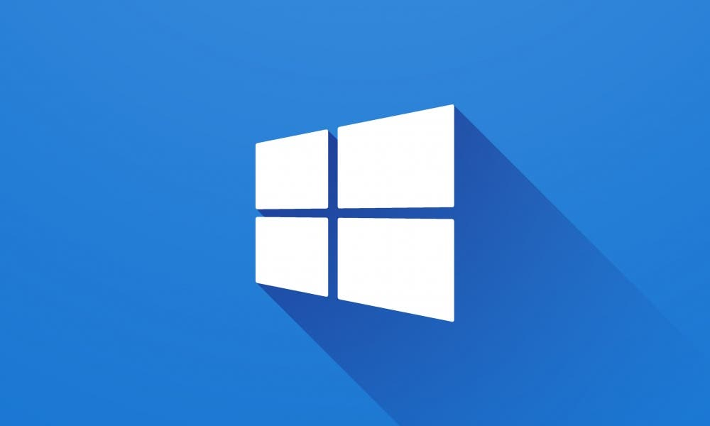
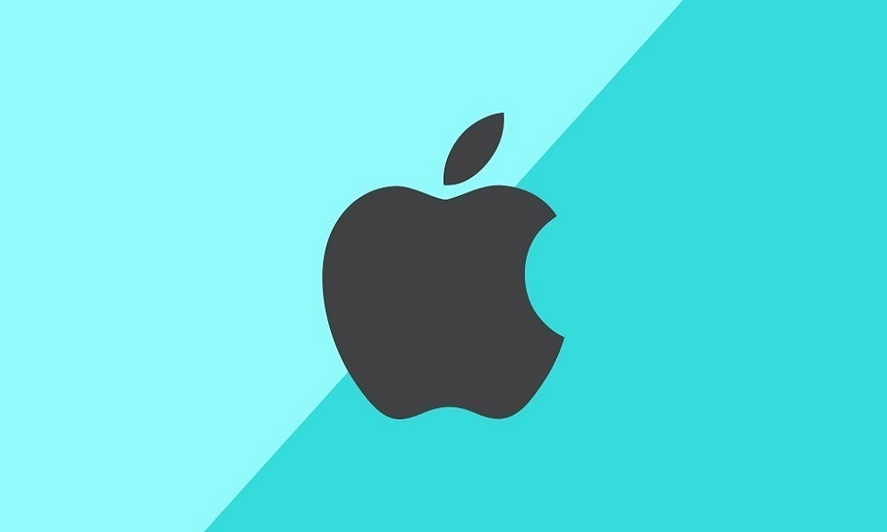

Sistemas Operacionais
O que são?

Em nossa matéria de SOP, você, aluno, aprenderá sobre o que é um Sistema Operacional, quais existem e suas diferenças entre si, como por exemplo, quais são de código fechado, e quais são os de código aberto.
Como usuários domésticos é comum apenas conhecer um ou outro desses variados sistemas, é normal que apenas conheçamos (ou saibamos) mexer apenas nesses mais populares, mas esse mundo de SOs vai muito além!
Sistemas Operacionais
Aqui você irá conhecer não só os princípios e fundamentos de um sistema operacional como o Windows, mas também o do Linux e suas variações, e até mesmo um pouco sobre Mac OS!
Increva-se hoje no curso de SOP e venha embarcar nesse novo mundo de conhecimento!

Windows
Linux

Mac OS X